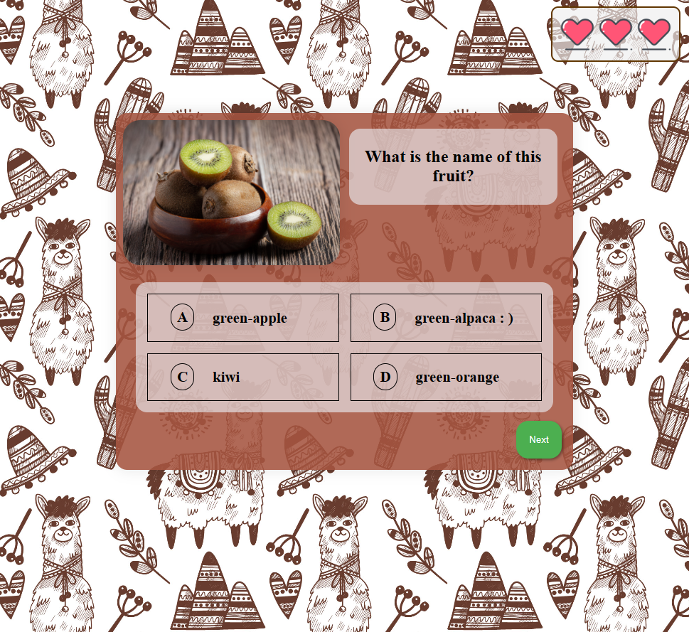
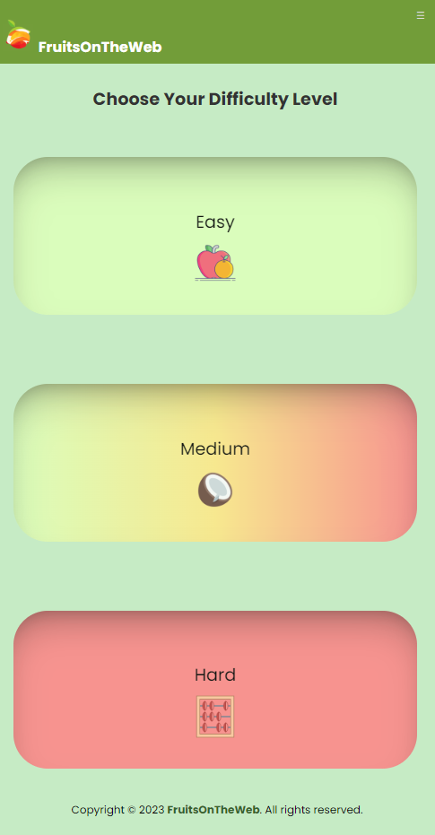

This document presents the development and evolution of a web application called "FrOW - Fruits On the Web". The application is designed to provide an engaging and educational gaming experience for users, especially primary school students, to learn about different fruits and vegetables, or even to practice their math.
The motivation behind selecting this subject is to provide an engaging educational experience for primary school students by introducing them to new fruits and integrating math into the gameplay.
The game is designed to be accessible to children of different backgrounds and abilities, and efforts will be made to ensure that the game is inclusive and easy to use. Additionally, teachers and parents who are interested in supplementing their children's education with a game-based learning tool may also find the FrOW project useful.
The home page is the first page that the user will see when he opens the application. It contains a navigation bar.
There is also a footer containing copyrights reserved, in all the pages excepting Play Page.
The login page is the page where the user can log in to the application. It contains a navigation bar.
The sign up page is the page where the user can register to the application. It contains a navigation bar, with the same as fields as the Login Page.
The forgot password page is the page where the user can reset his password. It contains a navigation bar, with the same as fields as the Login Page.
The verify page is the page where the user can enter the code that he received on the email. It contains a navigation bar, with the same as fields as the Login Page.
The reset password page is the page where the user can enter the new password. It contains a navigation bar, with the same as fields as the Login Page.
The about page contains information about the developers team, their social accounts,how they chose the project and finally how to play the game. Like in the Home Page, the header will have different buttons depending on the log in status.
The contact page contains a form with the following fields:
Also there are some other information about the emails/phone-number where the members can be contacted.
The play page is the page where the user can play the game. It contains a navigation bar, with the same as fields as the Home Page.
At this page you can select the level:
After the player chose the level, he will be redirected to the actual questions.
The question page is the page where the user can answer the question. It contains an image/mathematical equation, a question and 4 possible answers, with only one correct answer. There is a next button, which will redirect the player to the next question.
Depending on the answer, the player will receive a certain amount of points or he will lose a life. When reaching the last question(the 10th), there will be a button called "Finish" redirecting him to the Congratulation Page. If the player loses all his lives, he will be redirected to the Game Over Page.
This page will display the top 10 players with the highest score. The leaderboard will be updated in real-time.
There will be displayed the following:The profile page will provide information about the user:
The logout button will redirect the user to the home page for logged out users.
rogue scientists All pages within the scope of this project have been developed with a responsive design approach, utilizing specific media queries for optimal display on a range of devices and screen sizes.
Example: play page for mobile devices
@media screen and (max-width: 768px) {
.option-easy, .option-medium, .option-hard {
width: 100%;
max-width: 100%;
margin: 0;
padding: 2em;
}
.choose-text h1{
font-size: 1.5em;
}
How it looks:

The backend of our web project serves as the server-side infrastructure that handles data processing, logic implementation, and integration with external systems.
It is developed using PHP and MS SQL(from Microsoft) database for storage. The database is hosted on Microsoft Azure.
The backend uses some of the concepts of MVC(Model-View-Controller) architecture. In this sense, the backend is divided into three main components: Models, Controllers, and DAOs(classes for database operations). This allows for easier maintenance and testing of the code, as well as better scalability and reusability of the code.
Our backend follows the REST architectural style, which is a widely adopted design pattern for building web services. REST allows for a scalable and stateless communication approach between clients and servers, promoting loose coupling and interoperability. Using REST, our backend exposes a set of RESTful APIs that adhere to the principles of resource-oriented design. These APIs enable clients to interact with the backend by performing standard CRUD (Create, Read, Update, Delete) operations on resources. Each resource in our system is uniquely identified by a URL (Uniform Resource Locator), and clients can utilize different HTTP methods, such as GET, POST, PUT, and DELETE, to perform operations on these resources. The backend returns responses in a standardized format, JSON (JavaScript Object Notation), which allows for easy consumption by client applications. By adopting REST, our backend ensures a uniform and predictable interface for clients, facilitating easy integration with various front-end applications and external systems. It also enables scalability and extensibility, allowing us to add new resources and functionalities to the backend API without impacting existing clients.
Languages: PHP, JavaScript, T-SQL, HTML, CSS
Server: Apache from XAMPP
Email Service: swiftmailer(downloadable with composer)
Image Storage: Dropbox
In order to access the content of a Dropbox we permanently need to have an access token. This token is generated by the Dropbox API and it is unique for each user. This token is automatically refreshed by calling an API provided by Dropbox.
This API is used to check if the current access token is still valid or not. If it is not valid, the token is refreshed.
This API is used to generate a new access token. We need to provide the client id, the client secret and a refresh token(this token will never expire) in order to generate the access token.
This API is used to upload a file to a Dropbox. We need to provide the access token, file pointer and size of the file. Also in the header we need to specify the path where the file will be uploaded. It returns the file path in the Dropbox.
This API is used to create a shared link for a file(used to display images in the html pages). We need to provide the access token and the file path in the Dropbox. It returns the shared link, which will be inserted in the database.
This API is used to delete a file from a Dropbox. We need to provide the access token and the file path in the Dropbox.
Fields:
Fields:
Fields:
Fields:
Fields:
This class is used to get a connection to the database. It is a singleton class, so we can have only one instance of it. It has a field "connection" which is the connection to the database, that will be returned when "getConnection" will be called.
All these classes are used to access the database. They have methods for inserting, updating, deleting and selecting from the database.
SECURITY: SQL injection is prevented by using prepared statements and binding parameters to their expected types.
This controller class is used to handle the requests with the "/users" path.
The methods are:
This controller class is used to handle the requests with the "/auth" path. This controller is important for the authentication and authorization of the users, and also overall security.
The methods are:
This controller class is used to handle the requests with the "/questions" path.
The methods are:
This controller class is used to handle the requests with the "/pictures" path.
The methods are:
This controller class is used to handle the requests with the "/equations" path.
The methods are:
This controller class is used to handle the requests with the "/answers" path.
The methods are:
This class handles incoming HTTP requests and routes them to the appropriate controller or handler based on the requested URL or route configuration. It maps URLs to corresponding actions or functions that handle the requested operation.
This class updates the rss feed when user's ranking is updated(increase points, delete/insert user)
The authentication is done using JWT. The user sends the email and password to the server. The server checks if the email and password are correct. If they are, the server sends back a JWT token. The user will use this token to access the protected routes. The token is stored in the local storage. The token is valid for 24 hour. After 24 hour, the user will have to login again.
The admin is the only one who can add, modify or delete question, pictures, equations, answers and users.
The other users can play a game, see the ranking board, see their profile, modify their profile, see the contact page.
When the user registers, he will receive an email with a link to verify his email. Accessing the link will verify the email.
If the user forgets his password, he can reset it. He will receive an email with a reset code. He will have to enter the code and then the new password.